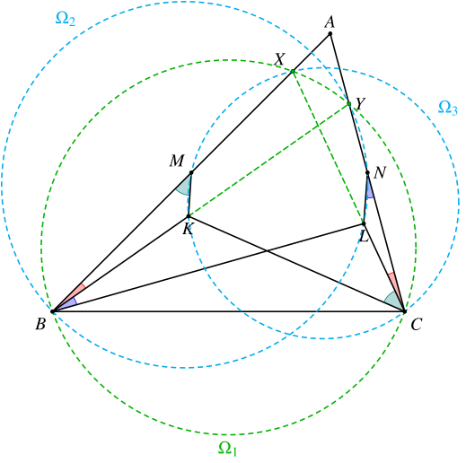
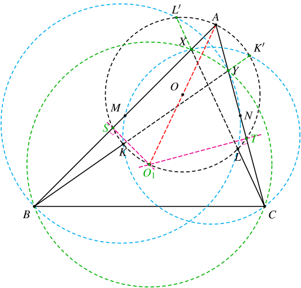
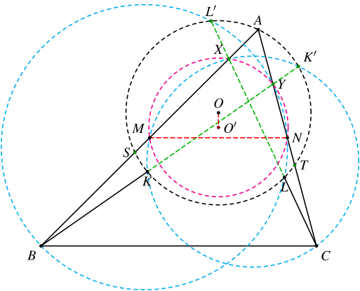
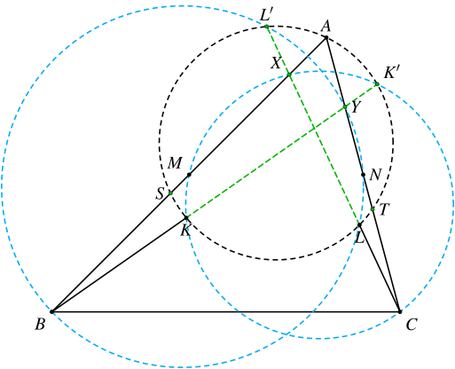
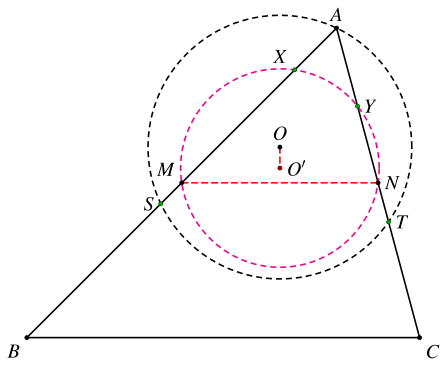
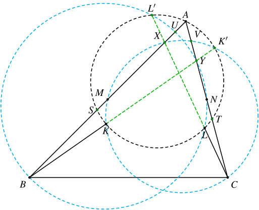

1. 题目
在三角形 ABC 中，点 M 和 N 分别是边 AB 和 AC 的中点。在三角形 BMC 和三角形 BNC 的内部分别选取点 K 和 L，使得点 K 在三角形 ABL 的内部，点 L 在三角形 AKC 的内部。已知
∠KBA=∠ACL,∠LBK=∠LNC,且∠LCK=∠BMK.
设 O 是三角形 AKL 的外心。证明：OM=ON。
2. 分析
这个题乍一看，给的三个等角条件比较奇怪，特别是后两个。
事实上，在后续的大模型测试中，DeepSeek、GLM、Qwen 都在这里翻车了，完全没搞明白这几个角度应该如何使用。
实际上，如果我们把 BK、CL 延长分别和 AC、AB 相交，交点依次为 Y、X，立马就能够得到三组共圆：

- ∠KBA=∠ACL⟹BCYX 共圆，记为 Ω1。
- ∠LBK=∠LNC⟹BLNY 共圆，记为 Ω2。
- ∠LCK=∠BMK⟹CKMX 共圆，记为 Ω3。
接下来，我们来看 △AKL 的外接圆，记为 Γ。
如果作图比较严格的话，马上能够发现 Ω1 的圆心 O1 就在 Γ 上，而且恰好是点 A 的对径点。

设 Γ 和 AB、AC 的另外的交点分别为 S、T，则有 O1S⊥AB，O1S⊥AC。于是 S、T 就是 Ω1 中的弦 BX、CY 的中点。
另外还可以发现，Γ 与 Ω2、Ω3 的另外的交点 L′、K′ 就在 CL、BK 上。
因此，我们可以去证明上面这八个点 A、K、L、K′、L′、S、T、O1 都共圆。
可以看到，Ω1、Ω2、Ω3、Γ 这四个圆的根心为 BY 和 CX 的交点。
在最开始的时候，我一直在围绕这个点做文章，导致没有找到合适的证明共圆的方法，于是就转而解析的方法了。
注意到这几个圆和 △ABC 三边的交点都非常好，因此我们可以考虑直接使用重心坐标系进行计算。
需要注意的是，这里不要直接去求点 K、L 的坐标，而是分别计算 Γ 和 Ω2、Ω3 的根轴（两圆方程相减），证明它们恰好就是 CX、BY 即可。
在证明完共圆之后，接下来的问题是如何证明 OM=ON。
由 MN∥BC 可知 MNYX 也共圆，记为 Ω4，设其圆心为 O′。则
OM=ON⟺OO′⊥MN⟺MN∥Γ 和 Ω4 的根轴

接下来我们只需要找到 Γ 和 Ω4 的根轴即可。
考虑 Γ、Ω4 和 Ω2，它们的根心为 LL′∩NY=C。
考虑 Γ、Ω4 和 Ω3，它们的根心为 KK′∩MX=B。
因此，Γ 和 Ω4 的根轴就是 BC，显然满足前面的要求。
实际上，直接验证点 B 和 C 对两圆的幂即可。
这样，我们就完成了最终的证明。
3. 解答
3.1. 处理角度相等的条件
设 X=AB∩CL，Y=AC∩BK。
由 ∠KBA=∠ACL 可知 B、C、Y、X 共圆，记为 Ω1。
由 ∠LBK=∠LNC 可知 B、L、N、Y 共圆，记为 Ω2。
由 ∠LCK=∠BMK 可知 C、K、M、X 共圆，记为 Ω3。
设 BK 与 Ω3 的另一个交点为 K′，CL 与 Ω2 的另一个交点为 L′。
设 S、T 分别为 BX、CY 的中点。接下来我们证明：K′、L′、S、T 都在 △AKL 的外接圆（记为 Γ）上。
3.2. 证明共圆
以 △ABC 为参考三角形建立重心坐标系，其中 a=BC，b=CA，c=AB，则 A=(1,0,0)，B=(0,1,0)，C=(0,0,1)，M=(1:1:0)，N=(1:0:1)。
设 AX=t⋅AB，AY=s⋅AC。由 AB⋅AX=AC⋅AY 可得 c⋅tc=b⋅sb，因此
st=c2b2
可知 X=(1−t,t,0)，S=(1−t:1+t:0)，Y=(1−s,0,s)，T=(1−s:0:1+s)。
在下面的证明中，我们用到如下结论：
在重心坐标系中，圆的一般方程为
−a2yz−b2zx−c2xy+(ux+vy+wz)(x+y+z)=0
其中，u、v、w 分别是点 A、B、C 到该圆的幂。

考虑 △AST 的外接圆（记为 Γ′），有
uvw=0=BA⋅BS=c⋅21(1−t)c=21c2(1−t)=CA⋅CT=b⋅21(1−s)b=21b2(1−s)
考虑 Ω3，有
uvw=AM⋅AX=21c⋅tc=21c2t=BM⋅BX=21c⋅(1−t)c=21c2(1−t)=0
因此 Ω3 和 Γ′ 的根轴的方程为
[21c2t⋅x+21c2(1−t)⋅y+0⋅z]−[0⋅x+21c2(1−t)⋅y+21b2(1−s)⋅z]=0
化简可得
c2t⋅x−b2(1−s)⋅z=0⟹sx−(1−s)z=0
即为直线 BY。因此 Ω3 和 BY 的交点 K、K′ 在 Γ′ 上。
同理可证，Ω2 和 Γ′ 的根轴为直线 CX，Ω2 与 CX 的交点 L、L′ 也在 Γ′ 上。
因此 Γ′=Γ。
3.3. 证明最终的结论
注意到 M、N 分别是 AB、AC 的中点，因此
AB⋅AX=AC⋅AY⟹AM⋅AX=AN⋅AY
因此 M、N、Y、C 共圆，记为 Ω4。

又因为 S、T 分别是 BX、CY 的中点，因此
BS⋅BACT⋅CA=BX⋅BM=CY⋅CN
可知 BC 是 Γ 和 Ω4 的根轴，因此
OO′⊥BC⟹OO′⊥MN⟹OM=ON
3.4. 证明共圆的另一种方法
设 Ω2 与 AB 的另一个交点为 U，Ω3 与 AC 的另一个交点为 V。由
AB⋅AU=AN⋅AY=21AC⋅AY=21AB⋅AX
因此 U 是 AX 的中点。同理可证，V 是 AY 的中点。

由
XA⋅XS=2XU⋅21XB=XU⋅XB=XL⋅XL′
可知 A、L′、S、L 共圆。同理可证，A、K′、T、K 共圆。
由
BA⋅BS=2BM⋅21BX=BK⋅BK′
可知 A、S、K、K′ 共圆。同理可证，A、T、L、L′ 共圆。
因此 A、K、K′、S、T、L、L′ 共圆。
4. 大模型测试
可惜的是，DeepSeek V4、GLM 5.2、Qwen 3.7/3.8 Max 都未能给出这道题目的证明（要求不使用解析的方法）。
甚至它们在第一步就栽了，完全没有想到构造 X、Y 两个点来证明共圆，都在想办法直接用这些角度去证明相似。（例如去证明 △BMK 和 △CNL（或者 △KCL）相似。）
如果你告诉它这些相似不成立，它又会去证明 AK=AL。
GLM 5.2 甚至一上来就认为「MN 的垂直平分线就是 BC 的垂直平分线」，后面自然也就都不对了。
后来我又尝试把前三个共圆的步骤给出来，让它顺着这个思路往下证，但还是没有成功。
DeepSeek V4 此时想到了要考虑根轴和圆幂，但是最终还是直接跳步到结论，变成了伪证。
Qwen 3.8 Max Preview 则是给出了一个长达 78 步的证明，里面混杂了纯几何、向量、三角的方法，根本看不下去。扫了一眼，里面有几个相似和线段相等的结论是错误的，其它部分也就没有再看了。
感觉是因为思考内容太长导致了思考过程意外终止，于是在输出的时候是依然按照思考的流程在走。
之前在使用 Qwen 模型和 Gemma 模型的时候都遇到过这种情况。